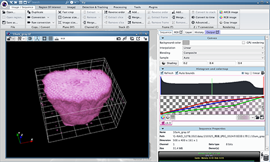

Icy (win, mac, lunux)
Icy is free and open source. Started in 2011 with the BioImage Analysis Lab at Institut Pasteur and licensed under GPLv3.

Download and Install
http://icy.bioimageanalysis.org
Basic instruction (official document, PDF)
http://icy.bioimageanalysis.org/doc/icy-introduction.pdf
Open Z-stack
- Create TIFF (multi-TIFF) file from JPEG serial images using FIJI/ImageJ.
- Drag and drop the folder containing serial images to ImageJ bar.
Save as...,TIFF
- Open the multi-TIFF file from
Icy icon
Scale
- Input pixel size (X, Y) and sectioning thickness (Z) in the window
Sequence PropertiesButtonsEditto edit, andOkto save.
Volume rendering
- Select
3D VTKfrom pull-down menu. Default is2D. - Adjust
gray lineorRGB linefor brightness in the windowHistogram and colormap. gray or RGB can be selected by pushing the buttons in theHistogram and colormap. - Adjust
white linefor opacity in curve window.
Orthogonal planes
- Select
Blue ball icon(View 3D data in three orientations simulteneously (XY, YZ, XZ)) from pull-down menu.
Segmentation (under practicing)
Region Of InterestDetection & TrackingProcessingTools
Movie
Tools>3D Rotation- Choose
Angle step - Play button to compute, then movie will be appeared as a new file.
- Save the movie file. Tab
Image/Sequence>Save as...